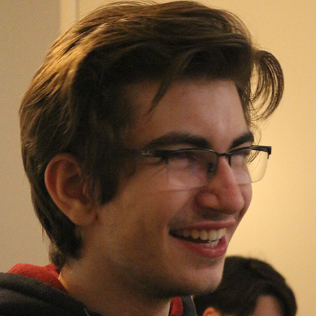
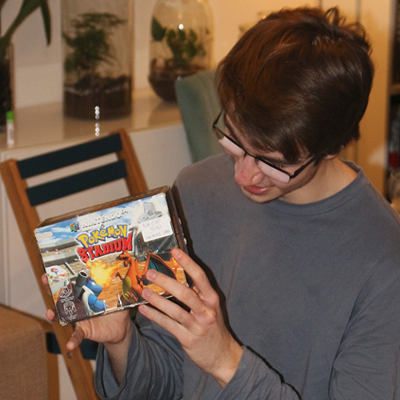
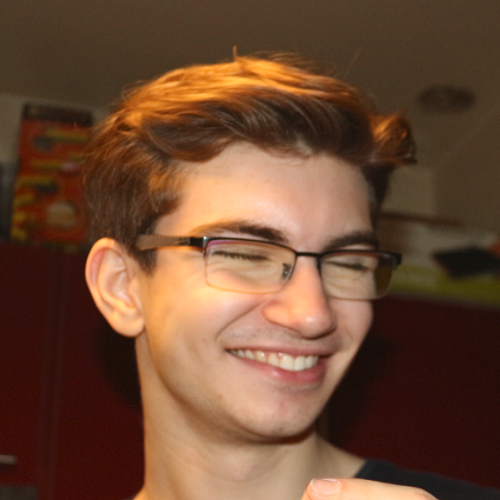

Quentin (aka Quentin (0,004), le pape Finex, Quentin, Quentin | A2 CDI, Quentin Garnier|A2 CDI, Quentin | A1, Quentin Garnier | G1, QuentinG selon ses nombreux pseudos discord) est né le 27 février (je sais plus trop mais par la a peut pres) 2004 et atteindre le grand âge de 20 ans cette année. Habitant actuellement dans cette charmante ville qu'est chatillon, il s'y est construit son petit chez lui dans son cocon familial (coordonnée exacte : 33.762582, 130.366301)
Tout fraîchement sorti d'un bac spécialité mathématique/NSI dont il sort avec une mention bien, et des notes qui en surprendront plus d'un dans chacune des spécialités ! En effet, à la fin des épreuves, il est sorti et a prononcé ces mots : "ez". Maintenant étudiant à l'IIM, malgrés un très bon niveau et de nombreux projet abouti en 3D, mais aussi une forte hésitation avec l'axe JV, il décida de suivre son compère Thomas dans l'axe CD&I


En ce qui concerne son avenir, Quentin espère avant toute chose voir son jeu Overwatch revenir à la vie. Nan parce qu' en vrai on rigole mais son jeu qui meurt petit à petit, de plus en plus vite à chaque mise à jour, le jour où tout sera fini ca sera pas trop facile pour lui... Sinon a titre perso je ne sais pas trop ce qu'il veut faire plus tard :/